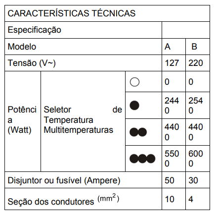

🔹 Ir para Problema 77 | 🔹 Ir para Problema 79
115. (ENEM)
O manual de um chuveiro elétrico apresenta uma tabela de características técnicas. Uma pessoa adquiriu um chuveiro do modelo A e verificou que precisava trocá-lo por um disjuntor de 50 A. Intrigou-se com o fato de que o disjuntor a ser usado no modelo B deveria ter corrente 50% menor. Considerando os chuveiros A e B funcionando à mesma potência de 4400 W, a razão entre suas resistências elétricas — que justifica a diferença — é aproximadamente:

1) A resistência de um chuveiro é dada pela fórmula:
2) Para os modelos A (127 V) e B (220 V), a razão das resistências é:
3) Aproximando o valor, obtemos:
Assinale a alternativa correta: